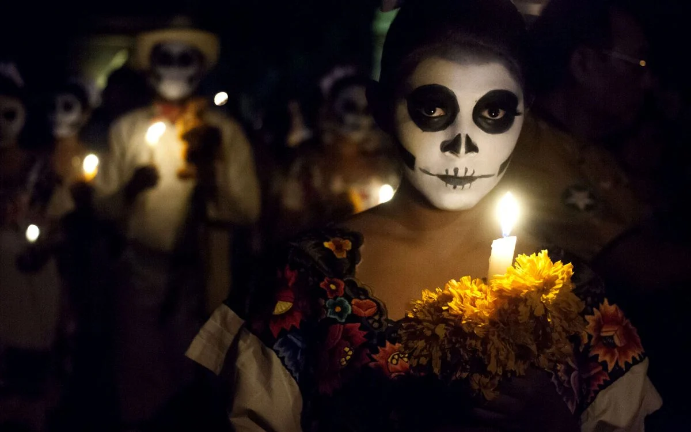
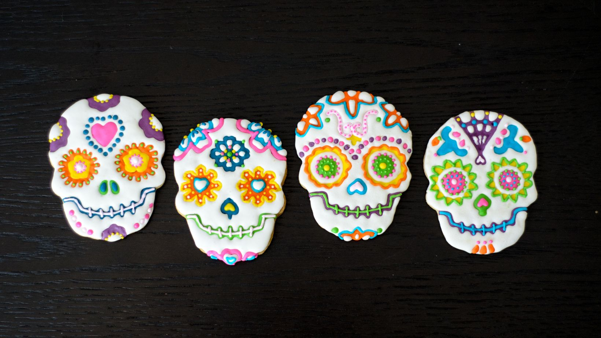
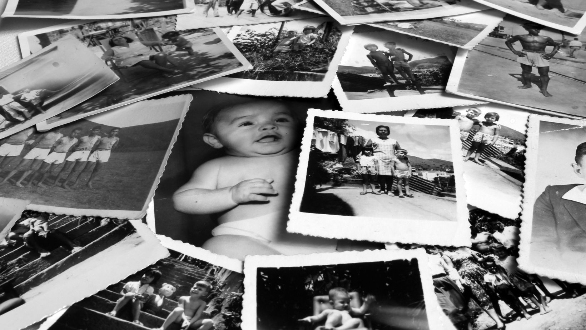

Mis Muertos
Una mirada al recuerdo de los seres queridos que viven en nosotros
Por Jorge L. Amparán

Las cañas de azúcar

Las cañas de azúcar son un vago y dulce recuerdo de mi infancia, cuando acompañaba a mi madre a visitar a sus muertos en un panteón seco y desértico en la ciudad de Delicias, Chihuahua.
Mucho tiempo después supe que la visita era en honor a mis abuelos y a dos hijos no logrados de mi madre. No recuerdo mucho, solo que caminábamos entre terrones y lápidas hasta dar con ellos. Visitar a los muertos por el día de muertos, es una costumbre que se me heredó pero que aún no he reclamado para mis haberes, tal vez por la influencia de las calabazas chimuelas y las capas de los vampiros sangrones.
La verdad es que no suelo visitar los panteones. Yo prefiero visitar la vida, porque me siento más cómodo con el confeti, el jolgorio y la algarabía. Por eso en estos días me gusta asistir a las verbenas y disfrutar de los bailes, comer tamales, saborear los buñuelos y disfrutar de los calientitos con tequila. No es que no recuerde a mis muertos, de hecho, siempre los tengo presentes. Tendría que aislarme totalmente del mundo para no tener noticias de ellos. Siempre en alguna parte y en cualquier momento, en alguna cama o en el lugar más increíble e inesperado, aparecen los muertos. Muertes que son muy lamentables para los vivos. En la familia o entre los propios amigos, siempre hay alguien que se va, así sin más, sin pedir permiso y sin avisar.
Todos queremos a nuestros muertos

Yo creo que todos queremos mucho a nuestros muertos y los valoramos aun más que a los vivos, tal vez por ese afán de querer tener lo que no tenemos. Los extrañamos cuando nos hacen falta para que nos acompañen en una tarde de viernes o noche de lunes, da igual, siempre los extrañamos. Los añoramos irremediablemente. Los queremos de vuelta para conversar, para abrazarlos y sentirlos, para que nos hagan reír una vez más, incluso para que nos ofrezcan luz en nuestros momentos más oscuros. Los mencionamos ocasionalmente ante los demás para compartir sus ejemplos de vida, y a la vez para constatar ante nosotros mismos que no estamos solos y que ellos, nuestros muertos, continúan viviendo en nosotros. Nuestros muertos se mantienen vigentes, cercanos. Viven en nosotros a través de sus enseñanzas, de sus palabras y de sus historias que llevamos puestas en los ojos, en la lengua y en las manos.
Algunos muertos vuelven y nos visitan en sueños, callados e impasibles. A mí me encanta recibirlos pero nunca atino a conversar con ellos. Yo sé que un día seré uno más de ellos, y tal vez volveré en sueños a aquellos que me recuerden. La verdad, eso no me asusta. No temo a la muerte porque ya la conozco, la he visto llegar y despojarme de lo más querido, la he visto en la propia naturaleza y entiendo, que forma parte de la vida misma. A mí lo que me espanta de la muerte, es que si llega y me sorprende, si se presenta irreverente e intransigente y me destierra de este mundo, entonces, no podré siquiera recordar los mejores momentos de mi vida que he disfrutado contigo, con ustedes.
Nada es permanente

Hace muchos años, cuando era un pequeño muñeco modelo migrante infantil (muy apuesto por cierto), tuve la obligada oportunidad de vivir en Estados Unidos. Recuerdo llegar por la mañana a mi salón de clases apenas unos minutos antes para escuchar una voz que salía de una cajita de madera colgada de la pared. Yo imaginaba que esa voz bajaba de vez en cuando de la cajita para ir al baño o para ir por unos cacahuates garampiñados. Siempre se trababa de una voz infantil que hablaba en inglés, un lenguaje muy extraño para mí en ese momento de confusión cultural. Mi inteligencia aun escasa en ese tiempo me contestaba que se trataba del juramento a la bandera de las barras y las estrellas. No sabía exactamente bien para qué se juraba a la bandera, pero sí sabía que esa bandera no era la mía. De pronto me encontré fuera de lugar, me sentía en un planeta extraño rodeado de extraterrestres, el cambio fue brutal. La gente hablaba en chino, la comida era distinta, las cosas y el lugar eran mucho más hermosos, pero yo extrañaba mis roídas bancas escolares mexicanas y las tostadas enchiladas aderezadas con chamoy. Mi vida cambió por vez primera, pero en esas mañanas y en esos lugares de ese extraño y nuevo país, aprendí muchas cosas.
Entre las cosas que aprendí y que ahora recuerdo y les quiero platicar es que las personas, los lugares y las cosas que conocemos y vivimos no son permanentes. La vida es un camino que solo te ofrece dos opciones: andar y experimentar los cambios, recorrer las pendientes, las curvas peligrosas, conocer sus bellos paisajes, sus laderas y barrancas, llegar a encrucijadas que a veces te desvían por caminos penosos y tristes; la segunda opción es: no moverte y aislarte del mundo aunque al final sin darte cuenta y sin remedio, te lleva la corriente. Somos viajeros en el tiempo. La vida es un camino distinto para cada quien, con trayectos más largos o más cortos, pero siempre cambiante. Durante el trayecto de la vida somos apenas testigos de cambios, pasamos por lugares que dejamos atrás, adquirimos cosas que disfrutamos por un tiempo, descubrimos cosas que luego perdemos, olvidamos o desechamos.
Viven en mí

Lo más importante y sumamente valioso que encontramos en nuestro andar por la vida son las personas. Personas que cambian nuestras vidas, que nos enseñan o nos permiten aprender. Lo mejor de todo es que tenemos la inmejorable oportunidad de conocer a esas personas, apreciarlas y disfrutarlas, aunque no nos acompañen siempre. Son personas que llegan y se van, que se mudan o desaparecen. En mi caso, cuántas cosas recibí de mi padre que desde hace años ya no está conmigo, sus abrazos lo eran todo. Cuantas cosas recibí de mi hermano, su protección y su consejo, su manera de reír y abrazar la vida. Amigos tantos que me dejaron estupendas experiencias, compañerismo, lealtad y afecto. Hoy quiero recordar a aquellos que se esfumaron en el tiempo, que terminaron su camino antes que yo. Los recuerdo felices, tristes, ocupados, molestos, alegres, llenos de vida. Son todas esas personas que aun cuando ya no están dejaron huella en mi vida, que afectaron alguna parte de mí historia, que participaron en la formación de mi carácter, que aportaron a mi propia inteligencia.
Estoy hecho de lo que aprendí y viví tanto de los lugares como de las cosas, estoy hecho también de personas. Mis muertos no recorren más su propio camino, se mudaron a un lugar desconocido, junto a Dios quiero pensar. Pero están vivos en la memoria de mi camino, forman parte de mi andar por la vida, no los he perdido porque aun viven en mí.